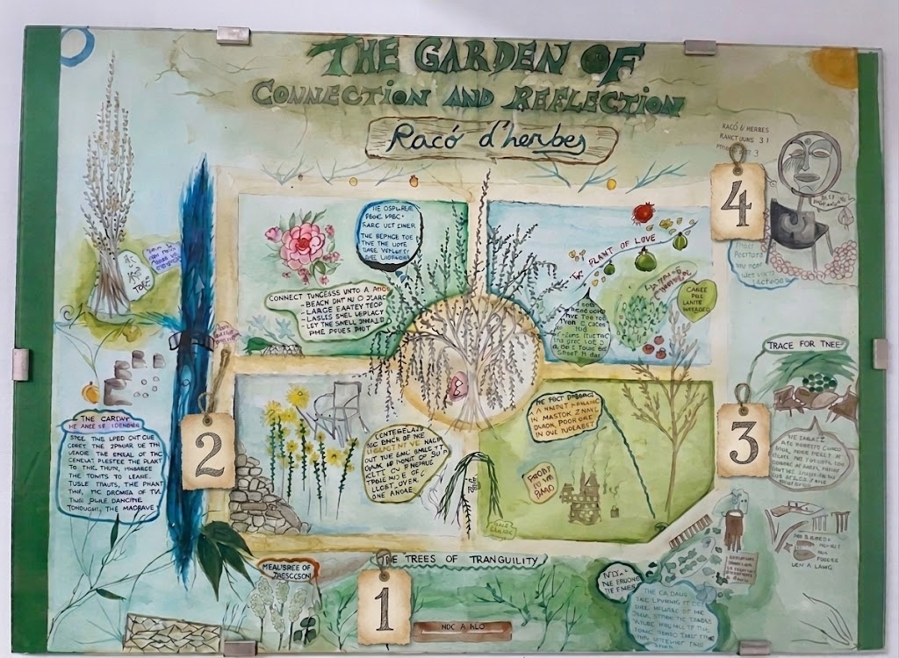
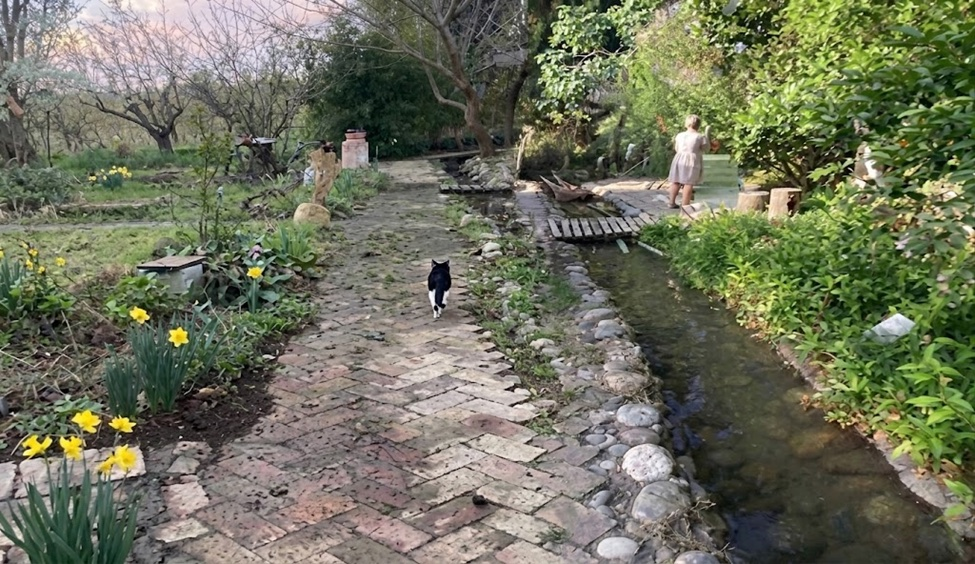
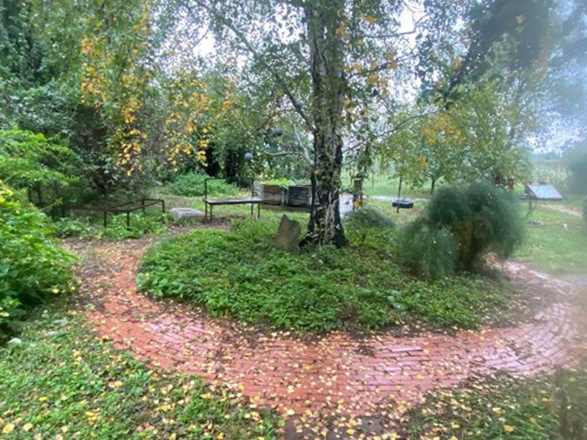
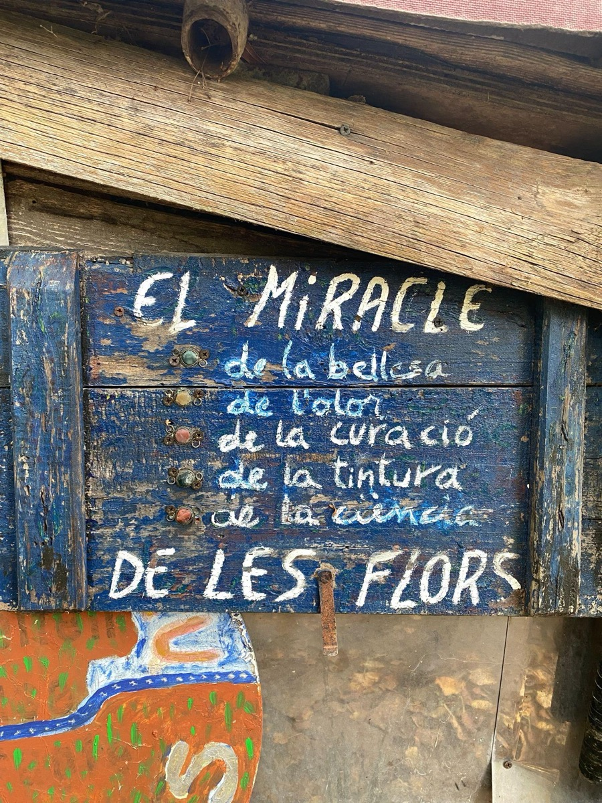

A walk inwards

Welcome to this small universe of nature, calm and discovery.
You have arrived at a place where time can keep a different pace. Here there is no need to hurry, to get anywhere, or to do anything in any particular way.
We ask only one thing of you: be present.
All through the garden you will find corners that invite you to talk, to walk, to play with scents, to listen to the water and perhaps to discover something new about yourself. Some moments are for sharing; others are to be enjoyed in silence.
Let your senses guide you and let each space speak to you in its own way. Don’t look for any result. There are no right or wrong answers.
The path starts here. The rest is yours to discover.
The map

We set off on a journey through the garden, around its centre, following paths that lead from shared experience to personal discovery.
Four corners, four ways to connect with nature and with yourself.
- Corner 1: the corner of words and reflection.
- Corner 2: the water path.
- Corner 3: the scent game.
- Corner 4: transformation.
Follow the route without hurrying: stop, breathe, look, let yourself be surprised.
The scented archways will carry you from one space to the next. Along the paths you will also find other places to sit, sing, read, wonder, or simply watch.
Corner 1 · The corner of words and reflection

Sharing words and thoughts, reflecting, and listening to others.
In the shade of the lime trees, the garden offers us a place to stop and meet.
Perhaps we come from days full of words, of thoughts piling up, or of conversations we keep putting off. Now we have the chance to sit, breathe and listen.
Around you there are short texts with thoughts to reflect on. Read one that catches your eye. Let the words settle inside you.
If you are in a group, you can share what the reading brought to mind. You can also listen to the others without needing to answer. Sometimes truly listening is a beautiful way of keeping someone company.
There is no need to reach a conclusion. It is enough for a word, an idea or a glance to make us feel a little closer.
Pause for a moment and ask yourself:
What do I need to say? And what do I need to hear?
Let the conversation flow unhurried, like a breeze passing through the leaves of the lime trees.
Corner 2 · The water path

Enjoying all five senses. Walking, feeling your body and taking in the garden.
Beneath the hazel and the jujube tree, the garden opens up before you and invites you to let go.
Feel your feet touching the ground, your body moving, your balance shifting. Listen to your breath and let it set the pace. There is no hurry and no destination to reach. Only the pleasure of being present.
When you reach the end, sit for a while: a place to rest and take in the garden is waiting for you. The waterfall plays its music and the water offers its coolness. Look around you, listen to the water and to the leaves as the breeze strokes them.
And now, ask yourself:
What has changed in you after this walk?
Perhaps all it takes is to close your eyes, breathe deeply and feel that you are part of this moment.
Corner 3 · The scent game

Waking up your sense of smell, playing, and discovering the soul of nature in the garden.
Some memories do not reach us through our eyes or through words. Sometimes a smell is all it takes for something inside us to wake up.
A little discovery game is waiting for you in this corner. Pick up one of the small jars, open it and gently bring the scent close. Breathe in. Try to guess which plant is hiding inside.
What does this smell suggest to you? Does it feel familiar? Does it bring back a memory? Does it stir curiosity, calm, joy, or some feeling you can’t quite name?
Once you have made your discovery, go and look for the plant in the garden. Notice its leaves, its shape, its colour and where it grows.
Let the game remind you that discovering is also a way of learning to look. Perhaps something that seemed small or insignificant suddenly becomes a special find.
Ask yourself:
How many things around me have I not yet learned to notice?
Share your discoveries with the others and enjoy the surprise. Here, letting yourself be surprised is part of the path too.
Corner 4 · Transformation

Stopping, looking at yourself and opening up to change.
Discovering the butterfly within us
You have reached the last corner of the garden. This space is just for you.
Before you sit down, stop in front of the text you will find on the ground. Read it calmly and let its words stay with you.
The caterpillar and the butterfly are the same being, but they do not share the same way of being in the world. What one day seems impossible for the caterpillar becomes possible when it turns into a butterfly.
And us? How often do we see ourselves as a caterpillar, without noticing the wings we have yet to discover? How many resources, how much strength and how much beauty may be waiting for the moment to awaken inside us?
In front of the mirror
Now sit down in front of the mirror. Look at yourself tenderly, without judging. How do you feel today? How do you see yourself at this moment in your life? What would you like to transform, look after, or help grow inside you?
When you are ready, turn the mirror until you find the corner of the garden you like best. Look for the view that makes you feel good and watch it appear behind you.
Look again. Now it is not just you in front of a mirror. The garden is there too. The trees, the plants, the light, the earth… Everything is part of the picture, and you are one more part of it.
What has changed in the way you see yourself?
Perhaps before you sat down you felt alone with yourself. Now, instead, you may find yourself part of a greater whole, connected to the life around you.
Give yourself a few moments to feel it. There is no need for immediate answers. Some discoveries need silence, time and trust.
Perhaps transforming does not mean becoming someone else, but discovering everything that already lives inside us and that we have not yet let unfold.
When you stand up, take this question with you:
What do you want to become? Which wings would you like to spread?
And remember: perhaps the butterfly you dream of being is already resting, silently, inside you.
The scented archways

Along the route you will find archways covered in fragrant climbing plants. They are like invisible threads joining the whole walk, inviting you to breathe mindfully between one experience and the next.
Walk through this archway slowly. Leave behind, for a few moments, whatever is occupying your mind, and enter the new space with your senses awake.
Before you go on, stop for a moment. Breathe deeply and let the scent of the plants reach you in its own time.
What does this scent awaken in you? Perhaps a memory, a feeling, or simply a pleasant sensation. There’s no need to look for an answer; just feel.
There is no need to identify the scent or find a meaning for it. Just notice it.
In this way the archways become small pauses between experiences, deepening the meditative feel of the walk.
Other corners
Along the way you will have discovered four corners and passed through the scented archways that kept you company with their fragrance. But the garden still holds small treasures. Among its paths you will find other places to stop, sit, rest, read, sing, or simply let time go by.
You may find there is nothing more to do than watch, listen and breathe… until you feel part of this small universe, one more element among the trees, the plants, the water and the life that beats here.
Because you are not just someone walking through the garden: you are part of it too.
Sometimes walking is also a way of coming back to ourselves. You don’t need to find an answer. Perhaps it is enough to breathe and feel that, right now, you are here.
The path has many more surprises in store:




